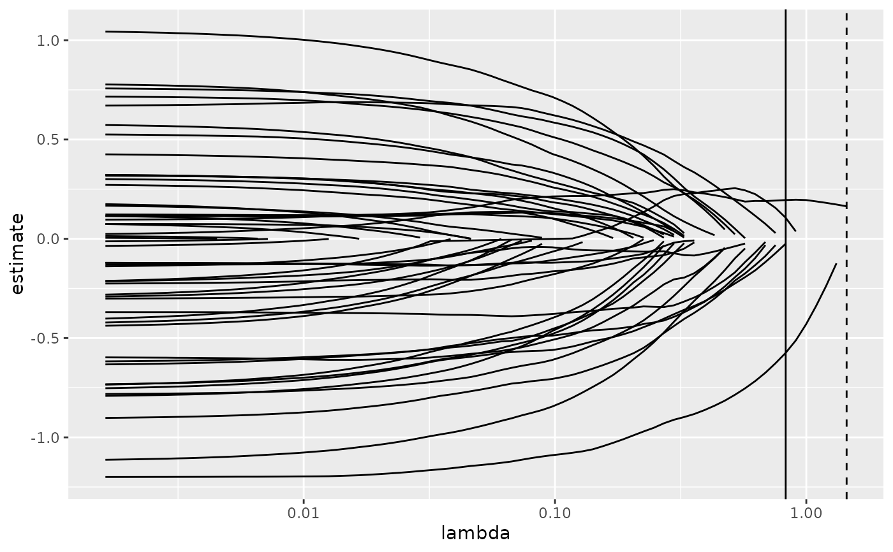

Glance accepts a model object and returns a tibble::tibble()
with exactly one row of model summaries. The summaries are typically
goodness of fit measures, p-values for hypothesis tests on residuals,
or model convergence information.
Glance never returns information from the original call to the modelling function. This includes the name of the modelling function or any arguments passed to the modelling function.
Glance does not calculate summary measures. Rather, it farms out these
computations to appropriate methods and gathers the results together.
Sometimes a goodness of fit measure will be undefined. In these cases
the measure will be reported as NA.
# S3 method for cv.glmnet glance(x, ...)
Arguments
| x | A |
|---|---|
| ... | Additional arguments. Not used. Needed to match generic
signature only. Cautionary note: Misspelled arguments will be
absorbed in |
See also
Other glmnet tidiers: glance.glmnet,
tidy.cv.glmnet, tidy.glmnet
Value
A tibble::tibble() with exactly one row and columns:
The value of the penalization parameter lambda that results in the sparsest model while remaining within one standard error of the minimum loss.
The value of the penalization parameter lambda that achieved minimum loss as estimated by cross validation.
Number of observations used.
Examples
library(glmnet)#>#>set.seed(27) nobs <- 100 nvar <- 50 real <- 5 x <- matrix(rnorm(nobs * nvar), nobs, nvar) beta <- c(rnorm(real, 0, 1), rep(0, nvar - real)) y <- c(t(beta) %*% t(x)) + rnorm(nvar, sd = 3) cvfit1 <- cv.glmnet(x,y) tidy(cvfit1)#> # A tibble: 74 x 6 #> lambda estimate std.error conf.low conf.high nzero #> <dbl> <dbl> <dbl> <dbl> <dbl> <int> #> 1 1.45 17.4 2.28 15.1 19.7 0 #> 2 1.32 17.4 2.28 15.1 19.7 1 #> 3 1.20 17.2 2.22 15.0 19.5 1 #> 4 1.09 17.0 2.15 14.8 19.1 1 #> 5 0.997 16.8 2.09 14.7 18.9 1 #> 6 0.909 16.7 2.03 14.7 18.7 2 #> 7 0.828 16.7 1.99 14.7 18.6 3 #> 8 0.754 16.7 1.95 14.7 18.6 5 #> 9 0.687 16.8 1.93 14.8 18.7 7 #> 10 0.626 16.9 1.91 15.0 18.8 7 #> # … with 64 more rowsglance(cvfit1)#> # A tibble: 1 x 3 #> lambda.min lambda.1se nobs #> <dbl> <dbl> <int> #> 1 0.828 1.45 100library(ggplot2) tidied_cv <- tidy(cvfit1) glance_cv <- glance(cvfit1) # plot of MSE as a function of lambda g <- ggplot(tidied_cv, aes(lambda, estimate)) + geom_line() + scale_x_log10() g# plot of MSE as a function of lambda with confidence ribbon g <- g + geom_ribbon(aes(ymin = conf.low, ymax = conf.high), alpha = .25) g# plot of MSE as a function of lambda with confidence ribbon and choices # of minimum lambda marked g <- g + geom_vline(xintercept = glance_cv$lambda.min) + geom_vline(xintercept = glance_cv$lambda.1se, lty = 2) g# plot of number of zeros for each choice of lambda ggplot(tidied_cv, aes(lambda, nzero)) + geom_line() + scale_x_log10()# coefficient plot with min lambda shown tidied <- tidy(cvfit1$glmnet.fit) ggplot(tidied, aes(lambda, estimate, group = term)) + scale_x_log10() + geom_line() + geom_vline(xintercept = glance_cv$lambda.min) + geom_vline(xintercept = glance_cv$lambda.1se, lty = 2)